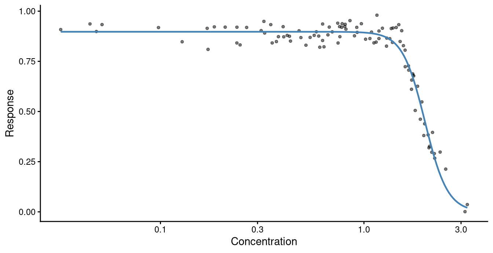
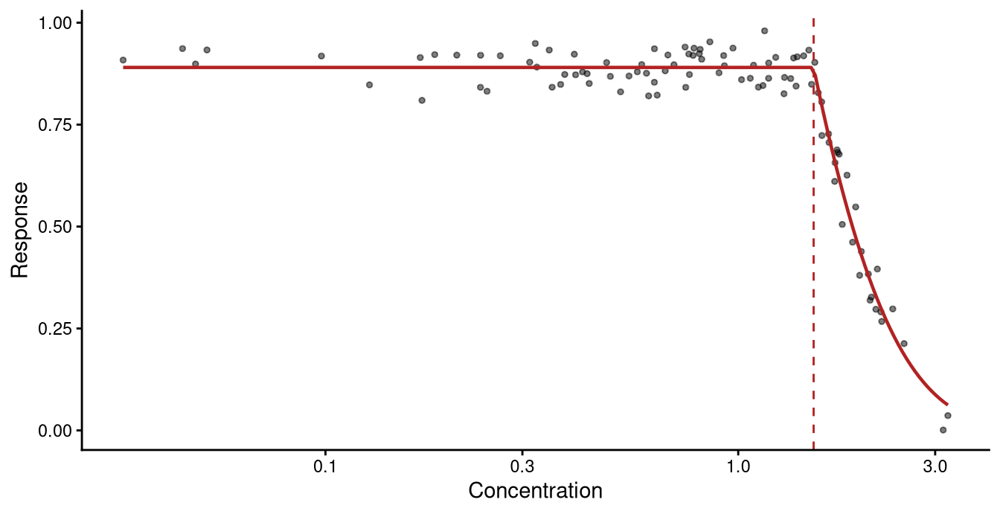
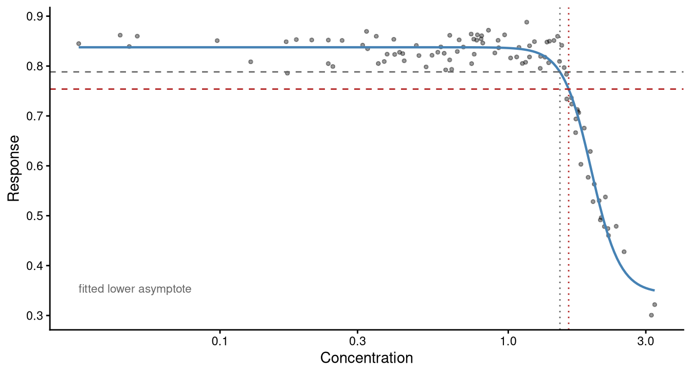
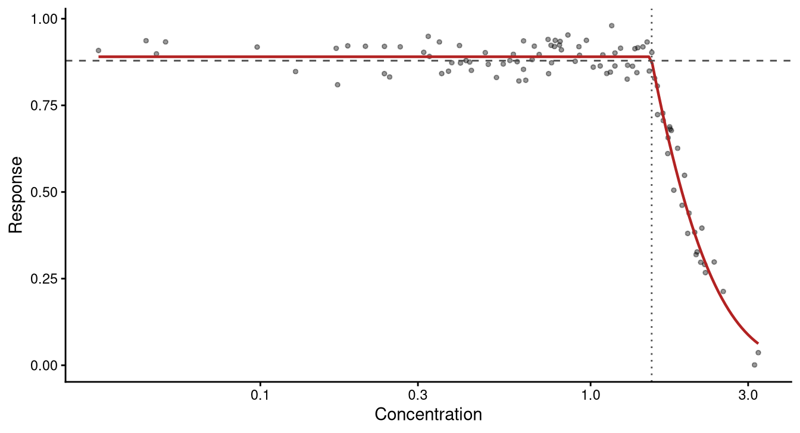

data(nec_data)
model_LL4 <- drm(y ~ x, data = nec_data, fct = LL.4())Fitting the same models with drc
A frequentist engine asked the same questions, and where its answers differ
Scope
This page is supplied for interest and is not taught.
drc (Ritz et al. 2015) fits concentration-response models by maximum likelihood. It is mature, widely used, and contains a great deal more than is shown here. What follows asks it the questions the course asks of bayesnec, and sets out where the two engines answer the same question and where they answer different ones.
Better sources exist for drc itself:
- Christian Ritz’s dose-response site
- the
drcpaper in PLoS ONE and its supplement of worked examples (Ritz et al. 2015) - community material at rstats4ag.org
Fitting a curve
drm() takes a formula, the data, and a mean function through fct. This is the dataset from module 2, fitted with a four-parameter log-logistic curve.
ggplot(nec_data, aes(x, y)) +
geom_point(alpha = 0.5, size = 1) +
geom_line(data = curve_data(model_LL4, min(nec_data$x), max(nec_data$x)),
aes(x, fit), linewidth = 0.8, colour = "steelblue") +
scale_x_continuous(trans = "log", breaks = c(0.1, 0.3, 1, 3)) +
labs(x = "Concentration", y = "Response") +
theme_classic()
nec_data.
The curve declines from about 0.9 at the lowest concentrations to near zero at the highest, with the steep part between roughly 1 and 3.
Reading the fit
summary(model_LL4)
Model fitted: Log-logistic (ED50 as parameter) (4 parms)
Parameter estimates:
Estimate Std. Error t-value p-value
b:(Intercept) 7.8488e+00 6.4920e-01 12.0898 <2e-16 ***
c:(Intercept) 2.0154e-05 4.3897e-02 0.0005 0.9996
d:(Intercept) 8.9732e-01 6.0071e-03 149.3778 <2e-16 ***
e:(Intercept) 1.9950e+00 3.5440e-02 56.2917 <2e-16 ***
---
Signif. codes: 0 '***' 0.001 '**' 0.01 '*' 0.05 '.' 0.1 ' ' 1
Residual standard error:
0.04775948 (96 degrees of freedom)A four-parameter drc model reports parameters named b, c, d and e:
| meaning | bayesnec equivalent |
|
|---|---|---|
b |
slope, sometimes the hill slope | beta, which the bayesnec equations use as exp(beta) |
c |
lower asymptote | bot |
d |
upper asymptote | top |
e |
the concentration halfway between d and c |
ec50 |
The estimates above are a slope of 7.85, a lower asymptote indistinguishable from zero, an upper asymptote of 0.897, and e at 1.995. e is always the concentration at which the response is halfway between d and c. Where c is zero, as here, it is also the concentration at which the response has fallen to half its control level.
Each parameter comes with a test of whether it differs from zero. That test is seldom the question of interest. A lower asymptote indistinguishable from zero, as here, is a reason to consider a three-parameter model with the lower limit fixed at zero. It says nothing about toxicity.
For a continuous response fitted with a Gaussian error the residuals should be approximately normal, and that can be checked. For binomial or count data they are not expected to be normal, so a normality test does not apply:
ggplot(data.frame(r = residuals(model_LL4)), aes(r)) +
geom_histogram(bins = 20, fill = "grey80", colour = "white") +
labs(x = "Residual", y = "Count") +
theme_classic()
shapiro.test(residuals(model_LL4))
Shapiro-Wilk normality test
data: residuals(model_LL4)
W = 0.98855, p-value = 0.5498
The residuals are roughly symmetric about zero and the Shapiro-Wilk test returns a p-value of 0.55, so there is no evidence against normality for this fit.
Threshold models
drc provides threshold mean functions as well as smooth ones: NEC.2, NEC.3 and NEC.4. These estimate a breakpoint directly, in the same sense as the nec equations of bayesnec, so a NEC is available from either engine.
model_NEC3 <- drm(y ~ x, data = nec_data, fct = NEC.3())
summary(model_NEC3)
Model fitted: NEC with lower limit at 0 (3 parms)
Parameter estimates:
Estimate Std. Error t-value p-value
b:(Intercept) 1.5672051 0.0726125 21.583 < 2.2e-16 ***
d:(Intercept) 0.8902215 0.0048855 182.217 < 2.2e-16 ***
e:(Intercept) 1.5228700 0.0142273 107.039 < 2.2e-16 ***
---
Signif. codes: 0 '***' 0.001 '**' 0.01 '*' 0.05 '.' 0.1 ' ' 1
Residual standard error:
0.04145488 (97 degrees of freedom)The threshold is the e parameter, estimated at 1.523, with d the response level at concentrations below it.
confint(model_NEC3)["e:(Intercept)", ] 2.5 % 97.5 %
1.494633 1.551107 Module 2 fitted nec3param to these same data with bayesnec and reported a NEC of 1.54 with a 95% credible interval of 1.50 to 1.57. The drc threshold above is 1.52 with a confidence interval of 1.49 to 1.55. The two engines are estimating the same quantity here and they agree to within about one per cent.
ggplot(nec_data, aes(x, y)) +
geom_point(alpha = 0.5, size = 1) +
geom_line(data = curve_data(model_NEC3, min(nec_data$x), max(nec_data$x)),
aes(x, fit), linewidth = 0.8, colour = "firebrick") +
geom_vline(xintercept = coef(model_NEC3)[["e:(Intercept)"]],
linetype = 2, colour = "firebrick") +
scale_x_continuous(trans = "log", breaks = c(0.1, 0.3, 1, 3)) +
labs(x = "Concentration", y = "Response") +
theme_classic()
NEC.3 fitted to the same data. The dashed line is the estimated threshold.
The fitted curve holds flat at 0.890 until the threshold and declines exponentially after it, which is the shape nec3param also fits.
Effect concentrations
ED() returns effect concentrations, and two of its arguments determine what is computed.
ED(model_LL4, c(10, 50))
Estimated effective doses
Estimate Std. Error
e:1:10 1.507871 0.023089
e:1:50 1.995000 0.035440The basis of the percentage
For type = "relative", which is the default, the percentage is a fraction of the fitted response range, measured from the upper asymptote d down to the lower asymptote c. This can be checked directly against the curve:
cf <- coef(model_LL4)
c_lo <- cf[["c:(Intercept)"]]
d_hi <- cf[["d:(Intercept)"]]
ec10 <- ED(model_LL4, 10, display = FALSE)[1, 1]
ec50 <- ED(model_LL4, 50, display = FALSE)[1, 1]
c(response_at_EC10 = predict(model_LL4, data.frame(x = ec10)),
d_minus_10pc_of_range = d_hi - 0.10 * (d_hi - c_lo),
response_at_EC50 = predict(model_LL4, data.frame(x = ec50)),
midpoint_of_range = c_lo + (d_hi - c_lo) / 2)response_at_EC10.Prediction d_minus_10pc_of_range
0.8075928 0.8075928
response_at_EC50.Prediction midpoint_of_range
0.4486716 0.4486716 The response at ED10 is 0.8076, which is exactly d minus a tenth of the range, and the response at ED50 is 0.4487, exactly the midpoint. The percentage is therefore a percentage of d − c.
Both ends of that range are fitted parameters. d is the level the curve approaches as concentration falls, whether or not anything was measured there, and c is the level it approaches as concentration rises, which may lie beyond the highest concentration tested. A design that does not reach either plateau estimates that end by extrapolation, and every ECx inherits it.
bayesnec anchors differently. Its ecx() measures the decline from the control, defined as the predicted mean at the lowest observed concentration, which is a point inside the data rather than a fitted limit.
The reference argument
The name suggests reference chooses the anchor. It does not. Its only effect is a direction convention for increasing curves:
increasing <- transform(nec_data, y = 1 - y)
model_up <- drm(y ~ x, data = increasing, fct = LL.4())
rbind(
decreasing = c(control = ED(model_LL4, 10, reference = "control", display = FALSE)[1, 1],
upper = ED(model_LL4, 10, reference = "upper", display = FALSE)[1, 1]),
increasing = c(control = ED(model_up, 10, reference = "control", display = FALSE)[1, 1],
upper = ED(model_up, 10, reference = "upper", display = FALSE)[1, 1])) control upper
decreasing 1.507871 1.507871
increasing 1.511092 2.494251On the decreasing curve both settings return 1.508. On the increasing curve they return 1.511 and 2.494. For an ordinary concentration-response curve, which declines, changing reference changes nothing.
Values of type in each package
bayesnec::ecx() also takes a type argument and its values do not line up with drc’s.
drc type |
what it means | nearest bayesnec type |
|---|---|---|
"relative" (default) |
percentage of the fitted range d − c |
"relative", from the control to the bot parameter |
"absolute" |
an absolute response value | "direct" |
| — | percentage of the span from the control to the lowest predicted response | "range" |
| — | percentage decline from the control to zero | "absolute" (default) |
drc’s "absolute" asks for the concentration at which the response equals the number supplied, so ED(model_LL4, 10, type = "absolute") asks where the response equals 10. This response is bounded near 1, so no such concentration exists, and the call returns NaN with a warning:
ED(model_LL4, 10, type = "absolute", display = FALSE)Warning in log(exp(-tempVal/parmVec[5]) - 1): NaNs producedA missing value is the correct result. It is shown because the same word is the default in bayesnec and means a percentage there, so translating ecx(fit, type = "absolute") into ED(m, 10, type = "absolute") changes the question being asked.
Agreement between the engines
Where the fitted lower asymptote is zero and the curve is flat across the lowest concentrations tested, the fitted range and the distance from the control to zero are the same interval, and the two engines estimate the same quantity. nec_data satisfies both conditions.
set.seed(333)
bnec_ecx4 <- bnec(y ~ crf(x, model = "ecx4param"), data = nec_data)data.frame(
quantity = c("EC10", "EC50"),
drc_relative = c(ED(model_LL4, 10, display = FALSE)[1, 1],
ED(model_LL4, 50, display = FALSE)[1, 1]),
bayesnec_range = c(ecx(bnec_ecx4, ecx_val = 10, type = "range")[1],
ecx(bnec_ecx4, ecx_val = 50, type = "range")[1])) quantity drc_relative bayesnec_range
1 EC10 1.507871 1.513310
2 EC50 1.995000 1.995123The EC50 estimates differ by less than 0.001. The EC10 estimates differ by about half a per cent, and the drc estimate falls inside the bayesnec credible interval. The two fits differ in more than their method. LL.4 is logistic in log concentration and ecx4param is logistic in concentration, and drc fits a Gaussian error where bnec() chose a beta family for these proportions. They still return the same estimates to the precision that would be reported.
Divergence between the engines
Give the response a floor that is not zero and the fitted range is no longer the distance from the control to zero. The two anchors then measure different things.
floored <- transform(nec_data, y = 0.3 + 0.6 * y)
model_floor <- drm(y ~ x, data = floored, fct = LL.4())
cf_f <- coef(model_floor)
c_f <- cf_f[["c:(Intercept)"]]
d_f <- cf_f[["d:(Intercept)"]]
# A 10% decline from the control, expressed as the percentage of the fitted
# range that drc needs, so that both quantities come from the same fit.
level_from_control <- 100 * (0.10 * d_f) / (d_f - c_f)
c(fitted_lower = c_f,
fitted_upper = d_f,
EC10_of_the_range = ED(model_floor, 10, display = FALSE)[1, 1],
EC10_from_control = ED(model_floor, level_from_control, display = FALSE)[1, 1]) fitted_lower fitted_upper EC10_of_the_range EC10_from_control
0.3443691 0.8376138 1.5110272 1.6199901 The fitted range runs from 0.344 to 0.838. A decline of ten per cent of that range reaches a response of 0.789 and is met at a concentration of 1.511. A decline of ten per cent from the control reaches 0.754 and is met at 1.620, some seven per cent higher.
gr <- curve_data(model_floor, min(floored$x), max(floored$x))
ec_range <- ED(model_floor, 10, display = FALSE)[1, 1]
ec_ctrl <- ED(model_floor, level_from_control, display = FALSE)[1, 1]
ggplot(floored, aes(x, y)) +
geom_point(alpha = 0.4, size = 1) +
geom_line(data = gr, aes(x, fit), linewidth = 0.8, colour = "steelblue") +
geom_hline(yintercept = d_f - 0.10 * (d_f - c_f), linetype = 2, colour = "grey40") +
geom_hline(yintercept = d_f - 0.10 * d_f, linetype = 2, colour = "firebrick") +
geom_vline(xintercept = ec_range, linetype = 3, colour = "grey40") +
geom_vline(xintercept = ec_ctrl, linetype = 3, colour = "firebrick") +
annotate("text", x = min(floored$x), y = c_f + 0.01,
label = "fitted lower asymptote", hjust = 0, size = 3, colour = "grey40") +
scale_x_continuous(trans = "log", breaks = c(0.1, 0.3, 1, 3)) +
labs(x = "Concentration", y = "Response") +
theme_classic()
Both estimates are correct, and they answer different questions. The range-referenced EC10 is the concentration at which the response has fallen by a tenth of the range the fitted curve spans, from its upper asymptote to its lower. The control-referenced EC10 is the concentration at which the response has fallen to nine tenths of its control level. Where a guideline value is being derived the second is normally what is meant, and it is what bayesnec returns by default.
The practical rule when comparing an ED() result against an ecx() result is to establish that both are anchored the same way, and to record in the write-up which convention was used.
A no-significant-effect concentration
The NSEC is defined from the fitted curve and the variability of the control rather than from a model parameter (Fisher and Fox 2023), so it can be derived from a frequentist fit. Take the control level and a lower bound on it, then find the concentration at which the curve crosses that bound.
For the threshold model the control level is the d parameter, and its standard error is reported in the summary.
sig_val <- 0.01
pars <- summary(model_NEC3)$coefficients
d_est <- pars["d:(Intercept)", "Estimate"]
d_se <- pars["d:(Intercept)", "Std. Error"]
# One-sided lower bound on the control at the 1 - sig_val level. This is the
# frequentist counterpart of the control posterior quantile bayesnec uses.
lower_bound <- d_est - qnorm(1 - sig_val) * d_se
crossing <- function(z) predict(model_NEC3, data.frame(x = z)) - lower_bound
nsec <- uniroot(crossing, interval = range(nec_data$x))$root
c(control = d_est, control_se = d_se, lower_bound = lower_bound, NSEC = nsec) control control_se lower_bound NSEC
0.890221527 0.004885504 0.878856146 1.531069897 The control is estimated at 0.8902 with a standard error of 0.0049, giving a lower 99 per cent bound of 0.8789. The curve crosses that bound at 1.531, which is the NSEC. The threshold estimated by the same model is 1.523, slightly lower, because the curve has to decline a little past the threshold before it falls below the control’s lower bound.
ggplot(nec_data, aes(x, y)) +
geom_point(alpha = 0.4, size = 1) +
geom_line(data = curve_data(model_NEC3, min(nec_data$x), max(nec_data$x)),
aes(x, fit), linewidth = 0.8, colour = "firebrick") +
geom_hline(yintercept = lower_bound, linetype = 2, colour = "grey30") +
geom_vline(xintercept = nsec, linetype = 3, colour = "grey30") +
scale_x_continuous(trans = "log", breaks = c(0.1, 0.3, 1, 3)) +
labs(x = "Concentration", y = "Response") +
theme_classic()
The derivation above reads the control’s uncertainty off the d parameter because predict(model_NEC3, se.fit = TRUE) returns no standard error for this fit. NEC.3() supplies no derivatives of its mean function, and without them predict() returns the fitted values alone, with no warning.
Two things separate this from the bayesnec NSEC. The bound here is a normal approximation built from the standard error of d, where bayesnec takes a quantile of the control posterior. And there is no interval on the result, because propagating the uncertainty in both the control and the curve through the crossing would require the delta method or a bootstrap.
Model averaging
mselect() ranks candidate mean functions by an information criterion, AIC by default:
mselect(model_LL4, list(LL.3(), W1.4(), W2.4())) logLik IC Lack of fit Res var
W2.4 174.0792 -338.1584 NA 0.001875953
LL.3 164.3041 -320.6081 NA 0.002257496
LL.4 164.3050 -318.6100 NA 0.002280968
W1.4 157.1969 -304.3938 NA 0.002629416W2.4 has the lowest information criterion at −338.2, followed by LL.3 at −320.6.
maED() averages effect concentrations over the candidates using Akaike weights. A Buckland unconditional interval is available through interval = "buckland"; the default, used here, returns no interval:
maED(model_LL4, list(LL.3(), LL.4(), W1.4(), W2.4()), 10, display = FALSE) Estimate
e:1:10 1.564547The averaged EC10 is 1.565. The four candidates individually give 1.508, 1.508, 1.462 and 1.565, so the average sits at the value from W2.4, which took almost all of the Akaike weight because its information criterion is 17.6 units below the next.
Two properties of maED() are visible in drc::maED itself and matter before relying on it. It takes na.rm = FALSE and threads that through every sum(), so one candidate whose root-finder fails renders every averaged value missing rather than being dropped. And it forms weights as exp(-AIC/2) without centring on the minimum AIC, so once AIC reaches a few thousand every term underflows to zero in double precision and the weights become 0/0. Centring on the minimum resolves this and changes nothing where the uncentred form works.
Both packages can fit one equation or average over several, and they differ in the default. bayesnec averages unless asked to fit a single equation; drc fits one equation unless asked to average, and the uncertainty in which equation was selected does not appear in the interval of a single selected fit.
Comparing groups
EDcomp() compares effect concentrations between curves fitted with curveid:
data(daphnids)
daphnids.m1 <- drm(no / total ~ dose, weights = total, curveid = time,
data = daphnids, fct = LL.2(), type = "binomial")
EDcomp(daphnids.m1, c(50, 50))
Estimated ratios of effect doses
Estimate Std. Error t-value p-value
24h/48h:50/50 3.4021279 0.8182594 2.9356556 0.0033284The ratio of the two EC50 values is 3.40 with a p-value of 0.003 against a ratio of one, so the 24-hour and 48-hour EC50 values differ. bayesnec answers the same question by comparing posteriors and returns a probability that one estimate is lower than the other, which module 8 covers.
Agreement and divergence
drc |
bayesnec |
|
|---|---|---|
| Estimation | maximum likelihood | Bayesian, HMC via Stan |
| Interval | confidence interval, delta method | credible interval from the posterior |
| Threshold equations | NEC.2, NEC.3, NEC.4 |
the ten nec equations |
| NSEC | derived by hand, as above | nsec(), with an interval |
| ECx anchor | the fitted range, d to c |
the control, at the lowest observed concentration |
| Candidate set | one selected by AIC, or averaged with maED() |
averaged by default |
| Group comparison | ratio, confidence interval, p-value | probability of difference from the posteriors |
A confidence interval and a credible interval are not the same quantity. A credible interval states where the parameter lies with a given probability, given the data, the model and the priors. A confidence interval states that the procedure producing it would contain the true value in that proportion of repeated experiments. A risk assessment usually wants to state that there is a 95 per cent probability the NEC lies between two values, and that statement follows from the first and not from the second. Both are abbreviated CI, and brms prints l-95% CI, so name the interval type in a results table.
The distributional assumptions differ and the point estimates will differ with them. A continuous positive response will commonly be fitted Gaussian in drc where bayesnec selects a gamma, and the Gaussian fit is influenced more by the high-response observations. A difference between the engines is not by itself evidence that either is wrong.
drc intervals can be too narrow, or missing. Under type = "Poisson" the variance is fixed equal to the mean, so an overdispersed count response gets intervals narrower than the data support by roughly the square root of the dispersion; report the dispersion alongside the interval rather than rescaling it, since changing the variance assumption changes the model. Separately, the delta-method standard error is NaN wherever the variance calculation goes negative, which is neither rare nor confined to poor fits, and each occurrence arrives as its own "NaNs produced" warning. Where standard errors feed a model average, dropping candidates as their errors become unavailable changes what the average is an average of, so fix the candidate set for the whole curve rather than point by point.
Choosing between them
For a well-determined monotonic curve with adequate replication, fitted with the same distribution in both, the two engines return much the same answer, and drc returns it in seconds rather than minutes. The EC50 comparison above agreed even with a Gaussian error in drc and a beta family in bayesnec.
The longer run time of a Bayesian fit is justified where the problem is harder: where priors are needed to stabilise a non-linear fit, where the candidate set does not identify one curve, where an interval is wanted on a derived quantity such as the NSEC, or where the posterior itself is needed to propagate uncertainty into a species sensitivity distribution or to state the probability that one substance is more toxic than another.
Provenance
for (p in c("drc", "bayesnec", "brms")) {
cat(sprintf("%-10s %s\n", p, as.character(packageVersion(p))))
}drc 3.0.1
bayesnec 2.1.3.39
brms 2.23.0cat(sprintf("%-10s %s\n", "R", getRversion()))R 4.6.1Every number and figure on this page is produced when it is built.
References
Fisher, Rebecca, and David R. Fox. 2023. “Introducing the No-Significant-Effect Concentration.” Environmental Toxicology and Chemistry n/a (n/a). https://doi.org/https://doi.org/10.1002/etc.5610.
Ritz, Christian, Florent Baty, Jens C Streibig, and Daniel Gerhard. 2015. “Dose-Response Analysis Using R.” PLoS ONE 10 (12): e0146021. https://doi.org/10.1371/journal.pone.0146021.